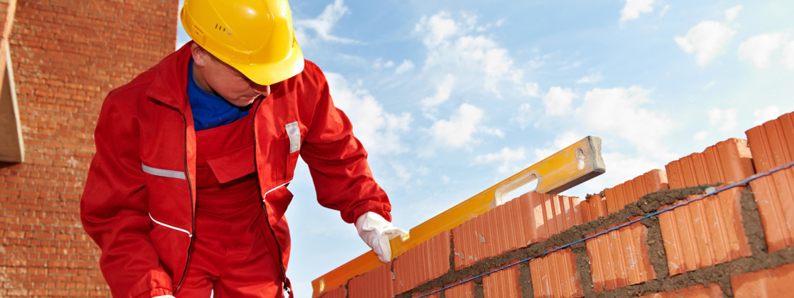
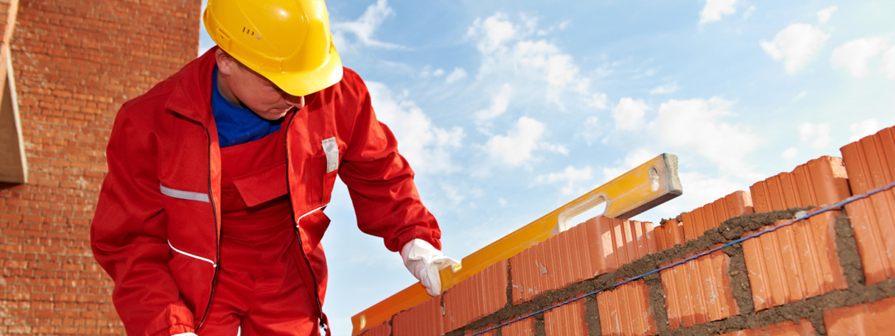

Architectural engineers apply science and technology to the real world by designing buildings that enhance our standard of living and improve our quality of life. They do this by combining building systems – structural, electrical, mechanical, lighting, acoustics and fire protection - into an integrated whole. These creative problem solvers are constantly facing the challenges of the future like sustainable building materials and green energy sources. Architectural engineers are trained to use the latest technologies – like computer based building design and analysis software.
There are many different ways you can impact the lives of people as an architectural engineer. You can design structural systems in buildings so they are able to withstand earthquakes and tornadoes. Because of highly engineered acoustical and lighting systems that eliminates dead spots and echoes, everyone in an audience can enjoy a theatre production. You could also design a lighting system for a sports stadium so that players aren’t blinded by the glare yet the HDTV cameras have enough light for quality instant replays, or a mechanical system for a hockey arena so the ice is maintained at just the right temperature.